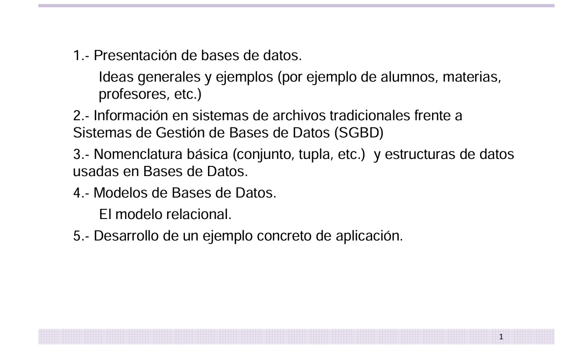
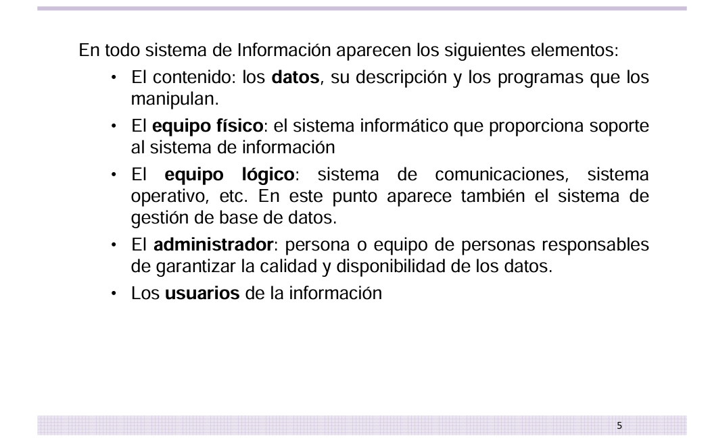
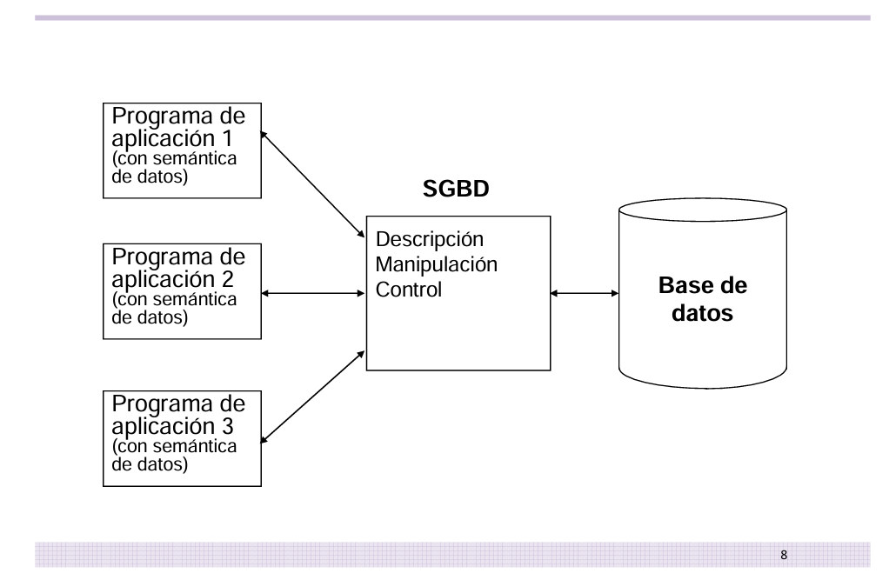
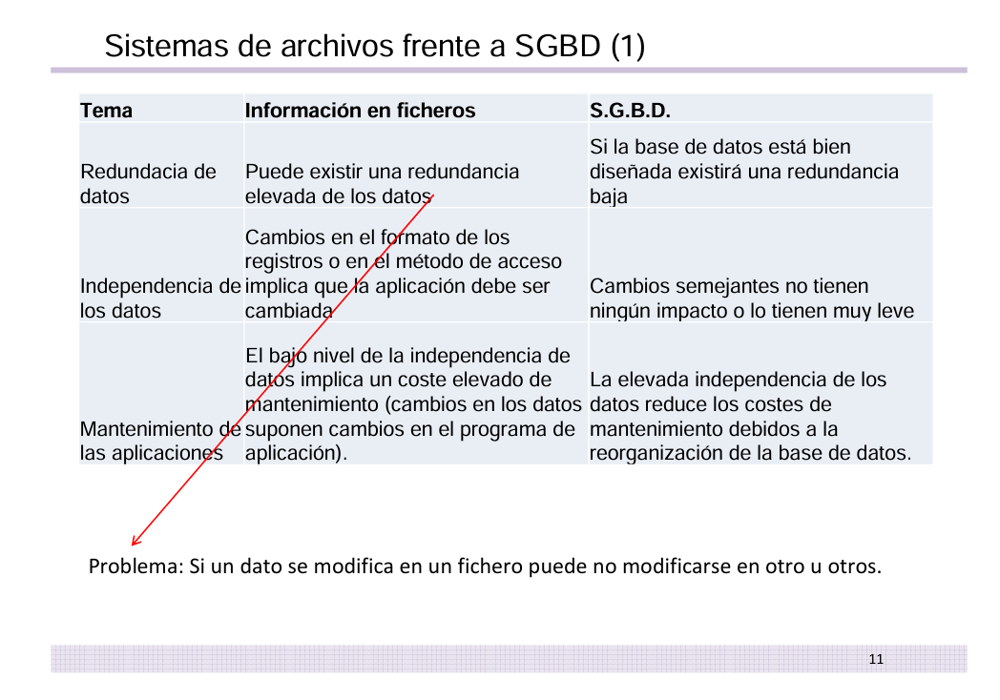
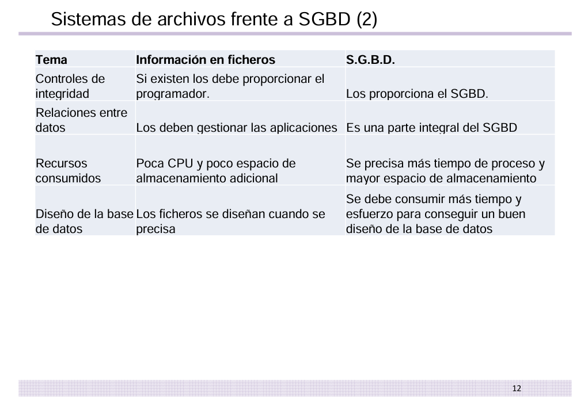
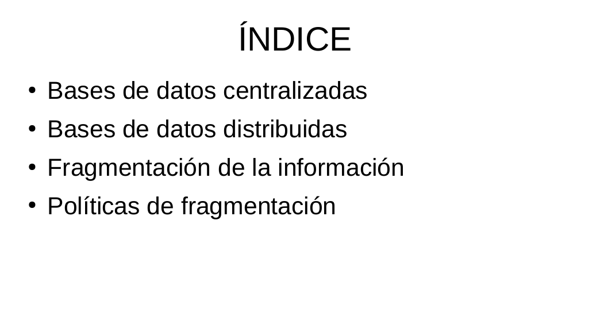
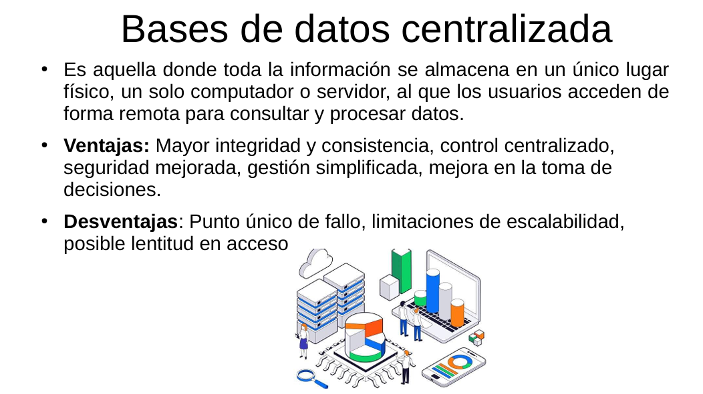
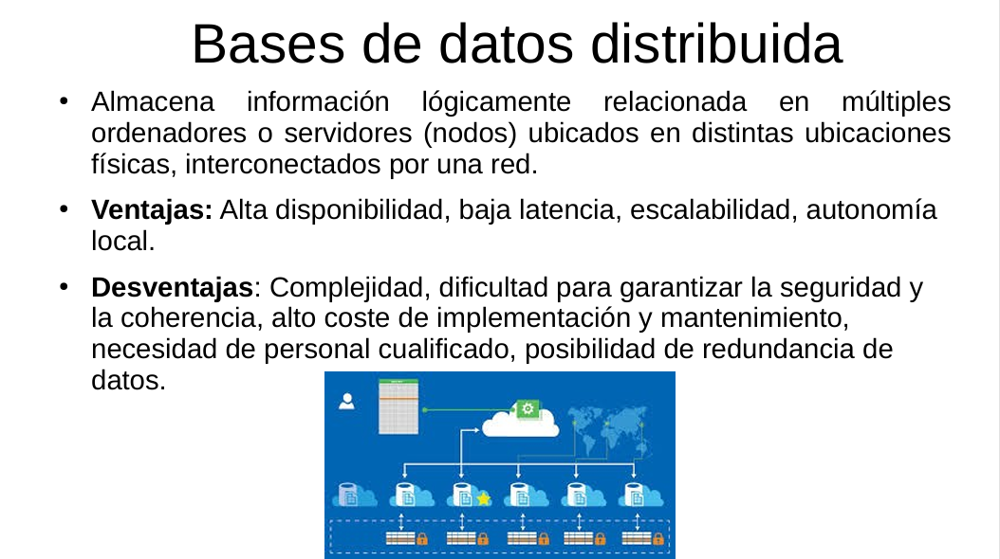

Gestión de Bases de Datos
Fundamentos de bases de datos
Primera actividad realizada en la asignatura de Gestión de Bases de Datos.
Información
Asignatura: Gestión de Bases de Datos
Tipo: Conceptos básicos
Estado: terminado
Objetivo
Comprender qué es un Sistema Gestor de Bases de Datos (SGBD), conocer las diferencias entre un SGBD y los sistemas tradicionales de ficheros, y diferenciar entre bases de datos centralizadas y bases de datos distribuidas.
Contenido
SGBD frente a sistemas de ficheros
Comparación entre los Sistemas Gestores de Bases de Datos y los sistemas tradicionales basados en ficheros, analizando sus ventajas e inconvenientes.
Bases de datos centralizadas y distribuidas
Estudio de las diferencias entre bases de datos centralizadas y bases de datos distribuidas, así como de los escenarios en los que resulta más adecuado cada modelo.
Lo que he aprendido
He aprendido qué es un SGBD y en qué se diferencia de los sistemas de ficheros tradicionales, comprendiendo las ventajas que aporta en cuanto a integridad, seguridad, concurrencia y redundancia de los datos. Además, he entendido la diferencia entre una base de datos centralizada, donde toda la información se almacena en un único punto, y una base de datos distribuida, donde los datos se reparten entre varios nodos, y he analizado cuándo conviene utilizar cada modelo.
Evidencias








Documentación ampliada
Temario 01
📄 Abrir PDF 01 en una pestaña nueva
Temario 02
📄 Abrir PDF 02 en una pestaña nueva